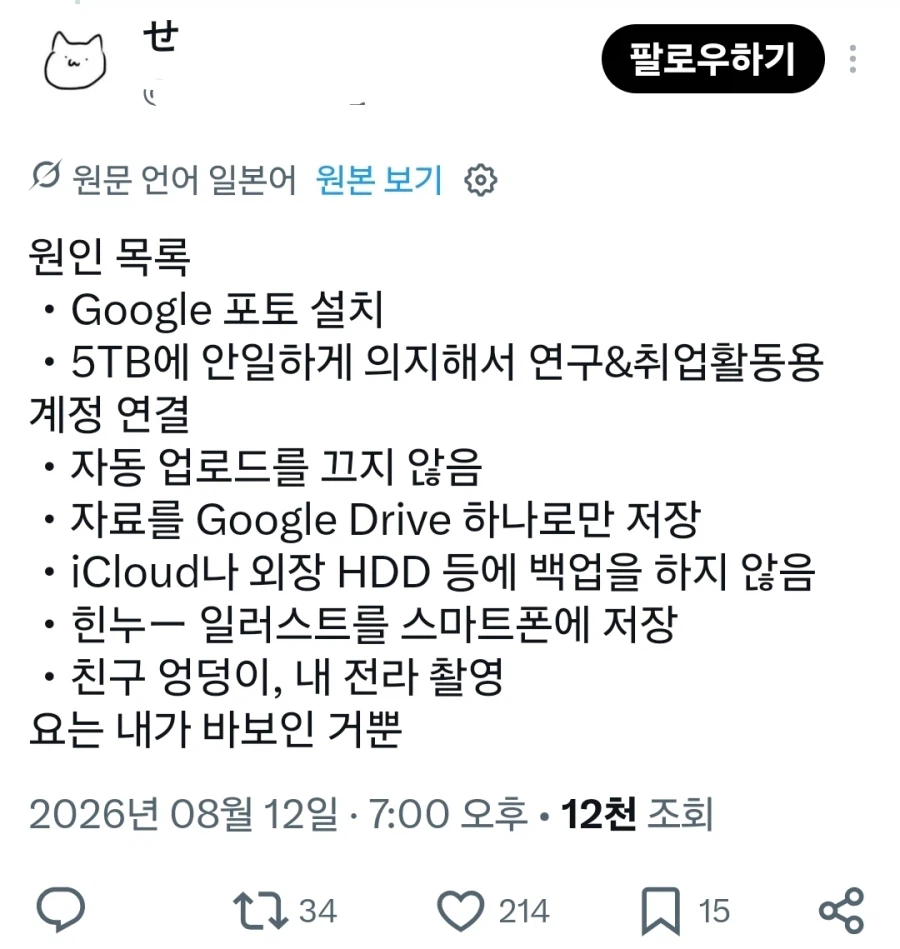

구글 '밴' 으로 연구실과 논문이 박살남
댓글
중요한것일수록 위탁하면 안되지 요즘 nas제품 많더만 그거 사기 싫었던걸까?
'연구실' 씩이나 되면서 구글드라이브 쓴 거 부터가 문제임
미니pc 십만원짜리에 중고가 20만원에 4테라 2개 사서 레이드1로 묶어놓기만 해도
구글 결제비 1년이면 뽑음
대기업도 클라우드쓰는데?
그건 좀 이야기가 달라
"대기업" 정도 되면 오히려 수십/수백명이 동시에 한 파일에 매달릴 경우까지 감안해야 하는 고수준 파일처리작업이나
다른 서비스툴과의 연동성 같은게 압도적으로 중요하기 때문에
그 솔루션의 일부분으로서 클라우드를 쓰는게 더 이득임
NAS의 가치는 딱 열댓명 수준까지 커버 가능함
20명까지는 나스가 좋은듯
그이상의 협업은 클라우드가 훨좋은거 같고
오히려 대기업이 나스 더 많이쓰지않냐.
난 내가일한곳들은 나스 권한신청해서 프로잭트별로 썼는데...?
그럼 사진을 전수검사하고 있단거잖아? ㄷㄷㄷ
안 할 리가 있나, 아무리 못해도 제미나이 학습용으로도 존나게 돌리고 있을걸?
구글이 괜히 구글드라이브 5테라를 제미나이 구독자한테 뿌리겠냐
구글 드라이브가 개인 스토리지 역할 뿐만 아니라 파일 공유 용도로도 사용되어서 전수검사하는 듯.
자기 딸 사진인가 올렸는데 밴 당한 서양 아저씨도 있지 않았나
그거 본 이후로 걍 개인nas 구축해서 쓰는중
경고도 없이 그냥 밴해버리는게 ㅈ같을듯
암호화해서 올려야하나
ai로 올릴때 인코드 내릴때 디코드 프로그램 짜고
경쟁자가 있어야 꼴통식 운영은 안 할 텐데
프라이빗이 아니라 그냥 스토리지자나